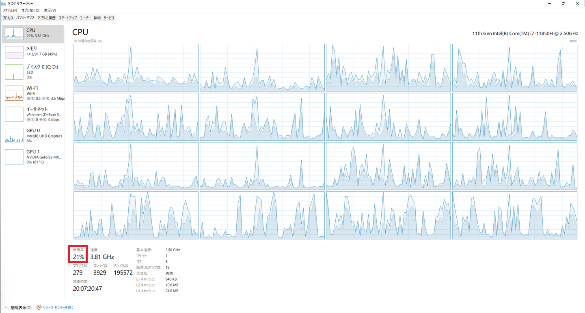

本記事はマイクロソフト社員によって公開されております。
こんにちは、Windows サポートチームの石川です。
システムの状況を確認するためにタスク マネージャーやパフォーマンス モニター上で CPU の使用状況を確認する方は多くいるかと存じます。しかしながら、パフォーマンス モニター上で選択できるパフォーマンス カウンター (取得できるデータ) は多数存在するため、どのようなパフォーマンス カウンターを確認すれば良いか悩まれる方も多いかと存じます。
そこで本記事では、CPU の使用状況を確認する際に見るべきパフォーマンス カウンターをシステム全体とプロセスごとに分けてご紹介します。これらのパフォーマンス カウンターは、Windows が動作しているシステムの CPU の使用状況が正常であるかを判断する目安となります。
適用対象の OS
- すべての Windows OS
CPU のパフォーマンスについて
CPU の使用状況は、システムの正常性を確認する上で重要な指標となります。常に CPU 使用率が高い状態は、動作遅延や発熱の原因となり得るため環境ごとに対処要否を検討されるかと存じます。
ただし、CPU 使用率が上昇している場合でも処理待ちとなっているスレッドが少ない状況では CPU リソースの枯渇は生じていないと考えられますので、一概にCPU 使用率の高さがシステムの動作に影響しているとは言い切れません。
また、CPU によっては、クロック周波数を使用状況に応じて変化させる機能があります。具体的には、負荷が高い場合はベースのクロック周波数より高い周波数で、負荷が低い場合には低いクロック周波数で稼働します。このような機能を持つ CPU をお使いの場合には、クロック周波数の変化に対応したパフォーマンス カウンターを使用する必要がございます。
1. システム全体の CPU 使用状況
システム全体の CPU 使用状況は、以下のパフォーマンス カウンターで確認できます。
- \Processor Information\ % Processor Utility
システム全体での CPU 使用率
クロック周波数が使用状況に応じて変化する CPU に対応しており、この値は、タスク マネージャ上に表示されている CPU の「使用率」と参照している値が同じです。
パフォーマンス カウンターがベースのクロック周波数を基準に作成されているため、負荷状況に合わせてクロック周波数が変化する CPU が搭載されている場合は、 100% を超えた CPU 使用率が表示される可能性があります。
※ 使用率が 100% を超えた場合、タスクマネージャ上では数値が切り捨てられ、常に 100% と表示されます。

\Processor Information\ % Processor Time
CPU が idle 以外のスレッドを実行するために使用した経過時間の割合
例えば、10秒間のうち2秒間 CPU が稼働すると、20%なります。このパフォーマンスカウンターは、CPU のクロック周波数の変化については考慮されておらず、必ずしも\Processor Information\ % Processor Utility とは一致しません。\System\Processor Queue Length
CPU の処理を待つスレッドの数
この値が常に高く維持されている場合や、上昇傾向にある場合は CPU 負荷が大きくなっている可能性があります。
Processor Queue Length の判断基準についての詳細は以下の URL をご参照ください。
URL：Queue Length の監視や分析をする際に注意したいこと
Processor と Processor Information の違い
Processor 関連のパフォーマンス カウンターには Processor と Processor Information の2つが存在します。Processor は、以前から使用されているパフォーマンス カウンターであるのに対し、Processor Information はシステムの高性能・高機能化に対応するために Windows Server 2008 R2 で追加されたパフォーマンス カウンターです。Processor は 64コア以上の CPU や NUMA（Non-Uniform Memory Access) に対応していないため、Processor Information を使用することをお勧めします。
2. プロセスごとの CPU 使用状況
プロセスごとの CPU 使用状況は、以下のパフォーマンス カウンターで確認できます。
注意として、これらのカウンター値の上限は CPU コア数x100となっているので 100% 以上の値を取る可能性があります。例えば 16 コアの CPU を搭載している場合 0 ~ 1600 の範囲で値が表示されます。そのため、こちらのカウンター値が 100% 以上のプロセスであっても、CPU リソースを多く使用しているとは断定できません。
\Process(プロセス名)\ % Processor Time
プロセスのスレッドすべてが、命令を実行するためにプロセッサを使用する経過時間の割合\Process(プロセス名)\ % Privileged Time
プロセスのスレッドが特権モードでコードを実行するために費やす時間の割合\Process(プロセス名)\ % User Time
プロセスのスレッドがユーザー モードでコードを実行するために費やす時間の割合
Privileged Time と User Time の値から、プロセスごとの CPU 使用状況を、特権モードとユーザー モードに分けて確認ができます。以上3つのパフォーマンス カウンターの関連性としては、細かい値まで必ずしも一致するとは限りませんが、Processor Time = Privileged Time + User Time という認識で問題ありません。
参考 URL
- NUMA Architecture
- CPU usage exceeds 100% in Task Manager and Performance Monitor if Intel Turbo Boost is active
変更履歴
- 2022/7/15 : 本 Blog の公開